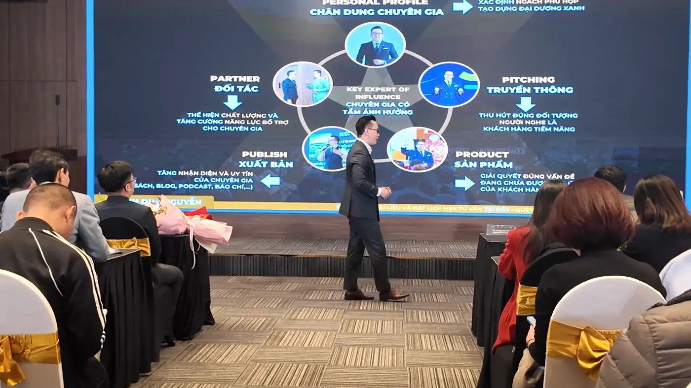

Bán đúng cách
Bán gì, cho ai, bán thế nào
- 1. Thị trường 7 chuẩn
- 2. Quy trình 9 chuẩn

Phương pháp
7 trụ cột, 51 chuẩn và cách bắt đầu. Trang này dành cho người chủ và quản lý kinh doanh. Bản PDF đầy đủ tải ở cuối trang.
Phòng kinh doanh kẹt ở đâu
Khi doanh số chững lại, 2 cách dễ nghĩ tới nhất là tuyển thêm nhân viên kinh doanh hoặc mua một phần mềm mới. Cả 2 cách đều tốn tiền, và nhiều khi doanh số vẫn đứng yên.
Lý do là phòng kinh doanh không chạy bằng một thứ. Nó chạy bằng nhiều thứ nối vào nhau: bán cho ai, bán theo các bước nào, ai bán, nhân viên kinh doanh được trả thế nào, dùng công cụ gì, đo bằng con số nào và ai điều hành. Một chỗ lỏng thì cả phòng chậm theo.
Mua phần mềm khi chưa có quy trình thì phần mềm chỉ ghi lại sự lộn xộn nhanh hơn. Tuyển thêm người khi chưa có cách kèm thì người mới học lại đúng những thói quen cũ của người cũ. Tăng hoa hồng khi chưa rõ khách mục tiêu thì nhân viên kinh doanh chạy theo mọi khách, kể cả khách không nên nhận.
Mô hình Phòng kinh doanh tiêu chuẩn 7M xếp những thứ đó thành 7 trụ cột. Tên tiếng Anh của cả 7 trụ cột đều bắt đầu bằng chữ M, nên mô hình gọi tắt là 7M. Người chủ nhìn cả phòng kinh doanh trên một trang, biết chỗ nào đang lỏng, và sửa đúng những chỗ đó trước.
7 trụ cột
Trước hết phải rõ bán gì, cho ai. Có khách mục tiêu rồi mới viết được cách bán. Có cách bán rồi mới biết cần tuyển người thế nào, trả họ ra sao. Công cụ đến sau, vì công cụ chạy theo cách bán. Chỉ số cho biết cả phòng có đang chạy đúng không. Quản lý giữ cho mọi thứ chạy đều mỗi ngày.
Bán gì, cho ai, bán thế nào
Ai bán, được trả thế nào
Ai quản lý, theo dõi số nào, dùng công cụ gì
Từng trụ cột
Phần dưới cho biết từng trụ cột trả lời câu hỏi gì, gồm những chuẩn nào, và phòng đang thiếu trụ cột đó thì thường thấy chuyện gì.
Bán gì, cho ai?
Trụ cột này đứng đầu vì mọi việc phía sau đều dựa vào nó. Chưa rõ khách mục tiêu là ai thì không viết được cách tư vấn, không biết tuyển người thế nào, cũng không đặt được chỉ tiêu hợp lý.
Thị trường trả lời 4 việc: khách nào nên nhận và khách nào nên từ chối; bán gói nào, với lời hứa gì và giá bao nhiêu; vì sao khách chọn công ty thay vì nơi khác; khách đến từ đâu và được giao cho nhân viên kinh doanh nào.
Bán thế nào?
Quy trình là các chặng khách đi qua, từ tin nhắn đầu tiên tới khi đóng phí, rồi quay lại mua tiếp và giới thiệu người khác. Mỗi chặng ghi rõ khi nào khách được chuyển sang chặng sau, nhân viên kinh doanh làm gì và nói gì ở chặng đó.
Quy trình chỉ có giá trị khi cả phòng làm theo hằng ngày. Bản quy trình in đẹp mà không ai dùng thì phòng vẫn bán theo thói quen của từng người. Vì vậy trụ cột này đi kèm quy tắc khi tư vấn khách: nhân viên kinh doanh được nói gì, không được hứa gì, và giữ vai người cố vấn cho khách thế nào thay vì nài khách mua.
Ai bán?
Trụ cột này lo cho từng người trong phòng: tuyển ai, người mới làm gì trong 90 ngày đầu, ai kèm, năng lực được chấm thế nào, người giỏi đi lên đâu và vì sao họ ở lại.
Nhân sự rất dễ nhầm với trụ cột Quản lý. Cách phân biệt: Nhân sự nhìn từng người được tuyển, được dạy, được kèm và đi lên thế nào. Quản lý nhìn cả phòng được điều hành ra sao.
Trả và chi thế nào?
Cách trả tiền quyết định nhân viên kinh doanh ưu tiên việc gì. Hoa hồng chỉ tính trên đơn chốt thì nhân viên kinh doanh dồn sức vào khách sắp mua, ít ai chăm khách cần theo lâu. Chỉ tiêu đặt quá cao thì cả phòng biết trước là không đạt, và thôi cố gắng từ giữa tháng.
Trụ cột này có 2 phần. Phần thứ nhất là thu nhập của nhân viên kinh doanh: lương cứng và phần thay đổi, hoa hồng và thưởng, thu nhập theo mức đạt chỉ tiêu, khen thưởng ngoài tiền, quy chế khi 2 người cùng chăm một khách hoặc khi có người nghỉ. Phần thứ hai là chi phí của cả phòng: phòng tiêu bao nhiêu, vào đâu, để có một khách đóng phí.
Giá bán và chính sách bán hàng không nằm ở trụ cột này. Giá là một phần của gói bán nên thuộc trụ cột Thị trường.
Bán bằng công cụ nào?
Công cụ gồm nơi giữ dữ liệu khách (thường gọi là CRM), các kênh liên lạc, biểu mẫu, tài liệu gửi khách, trợ lý AI, bàn điều khiển cho quản lý và quyền truy cập.
Công cụ đứng thứ 5, sau Thị trường, Quy trình, Nhân sự và Tài chính. Lý do: công cụ chạy theo cách bán, không phải ngược lại. Chọn phần mềm trước rồi bắt cả phòng bán theo phần mềm là cách tốn tiền nhất mà vẫn không ra kết quả.
Đội ngũ Coach Duy Nguyễn có một công cụ riêng tên Sales OS, dùng để theo dõi khách và việc của phòng kinh doanh. Sales OS chỉ là một phần của trụ cột này, không phải cả mô hình. Doanh nghiệp dùng phần mềm khác vẫn đạt được chuẩn của 7M.
Đo chỉ số nào?
Có 2 loại chỉ số. Chỉ số kết quả cho biết chuyện đã xảy ra: doanh thu, tỷ lệ chốt, giá trị đơn, khách quay lại. Số liệu theo dõi hằng tuần cho biết chuyện sắp xảy ra: khách được trả lời nhanh hay chậm, bao nhiêu khách qua được từng chặng, việc hẹn với khách có làm đúng hạn không.
Đợi cuối tháng nhìn doanh thu thì đã muộn để sửa. Nhìn số liệu theo dõi hằng tuần thì vẫn còn kịp.
Ngoài 2 loại chỉ số, trụ cột này còn gồm mục tiêu doanh số và cách chia, chỉ số riêng của từng vị trí (KPI), mục tiêu cải tiến của cả phòng trong quý (OKR), dự báo doanh thu và báo cáo.
Điều hành ra sao?
Quản lý là trụ cột giữ cho 6 trụ cột trước chạy cùng nhau mỗi ngày. Trụ cột này trả lời: quản lý trực tiếp làm gì mỗi ngày, họp những buổi nào và mỗi buổi gồm gì, ai lo cho cả phòng được kèm đều đặn, quyết định nào quản lý tự làm và quyết định nào phải lên người chủ, phòng giữ những chuẩn gì.
Trụ cột này còn một việc hay bị bỏ qua: đưa cách làm mới vào dùng thật. Viết quy trình mới, mua công cụ mới thì dễ. Khó là sang tuần thứ 6 cả phòng vẫn làm theo. Vì vậy mỗi lần đổi cách làm, quản lý đếm xem mỗi tuần có bao nhiêu người đang làm theo, và kèm từng người tới khi phần lớn phòng làm theo.
Tự kiểm tra nhanh trong 5 phút
Trả lời theo việc phòng đang làm thật trong tháng này, không theo việc phòng định làm.
Câu nào trả lời “chưa” thì trụ cột đó cần chấm kỹ trước. Nhiều câu cùng “chưa” thì bắt đầu từ trụ cột có số nhỏ hơn, vì trụ cột sau dựa vào trụ cột trước. Đây chỉ là cách đoán nhanh, chưa thay được việc chấm theo 51 chuẩn.
Bắt đầu từ đâu
Làm hết một lượt thì không phòng nào theo kịp, và sau 1 tháng mọi thứ lại về như cũ. Cách đi đề xuất có 4 bước:
Đội ngũ Coach Duy Nguyễn thiết kế tiêu chuẩn, tiêu chí và cùng doanh nghiệp điền bản thiết kế cho từng trụ cột. Ví dụ với trụ cột Nhân sự, đội ngũ không tuyển người thay doanh nghiệp, mà cùng doanh nghiệp đặt tiêu chuẩn tuyển, chương trình cho người mới và lộ trình thăng tiến.
Việc tuyển, đào tạo, bán và quản lý hằng ngày vẫn do phòng kinh doanh của doanh nghiệp làm. Đích của 7M là phòng kinh doanh tự chạy được, không phải việc gì cũng chờ người chủ.
Bước tiếp theo
Không phải bằng một quyết định lớn. 3 lối dưới đây đều là một việc như vậy, đủ nhỏ để làm xong trong tuần này. Bạn cứ đi chậm cũng được, Duy không giục ai.
Trả lời 28 câu theo Mô hình 7M trong khoảng 10 phút, để biết phần nào của phòng kinh doanh đang yếu nhất.
Làm phiếu tự chấmMỗi tuần một lá thư ngắn về một chỗ người chủ doanh nghiệp hay vướng, kèm một việc bạn làm được ngay trong tuần.
Cảm ơn bạn. Ứng dụng thư vừa mở với nội dung soạn sẵn, bấm Gửi là xong.
Địa chỉ thư chưa đúng. Bạn kiểm tra lại giúp Duy.
Muốn mời Duy nói chuyện, hợp tác truyền thông hay hỏi về tư vấn phòng kinh doanh thì vào trang liên hệ.
Xem cách liên hệ